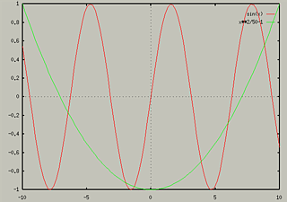
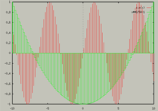
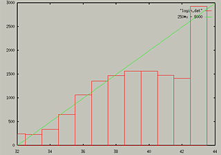

Overlaying Multiple Plots
To overlay multiple plots, you can just list them in the same plot
command, putting comma's between them. For example:
produces the following:

You can add more complex arguments, or mix functions and data:
- plot sin(x) with impulses, x**2/50-1 with boxes

- plot "login.dat" with boxes, 250*x-8000

You can overlay as many graphs as you want. In addition to listing all
of the commands on the same line, you can use the replot
command to add functions. For instance, the first example above could
have been like this:
- plot sin(x)
- replot x**2/50 - 1
You can overlay multiple graphs of any kind, 3D, parametric, etc...
Table of Contents - Previous - Displaying a Grid behind Graph - Next - Changing Line Style
College of Natural Sciences /
University of Northern Iowa /
manager@cns.uni.edu
Copyright © 1996 College of Natural Sciences. All Rights Reserved.
Last Modified: 11/4/96